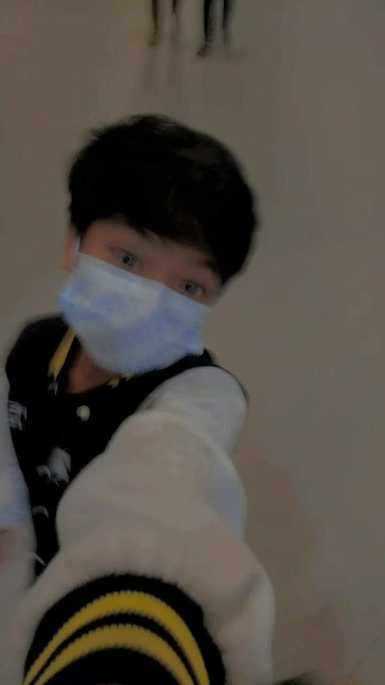
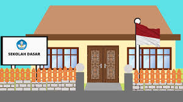
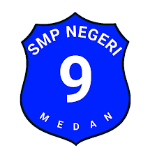
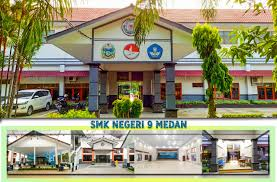

Personal

Kelvin adalah individu yang sangat tertarik dengan hal yang menantang,baik itu di pelajaran ataupun diluar pelajaran, tetapi ia tidak ingin ribet. Sejak kecil, Bastian sangat giat mengejar impiannya. Mengambil jurusan rekayasa perangkat lunak bukanlah impian sebenarnya,tetapi Kelvin yakin ini adalah jalan yang terbaik untuk sukses.
Pendidikan
Pendidikan Formal
Pengalaman
SDN 060919

pengalaman saya selama di sd :
- dapat juara makan kerupuk
- mengikuti eskul pramuka di sekolah
SMPN 9 MEDAN

pengalaman saya selama di smp :
- Mengikuti lomba antar sekolah
SMKN 9 Medan

Menempuh pembelajaran dengan jurusan Rekayasa Perangkat Lunak
saat baru masuk SMK, saya masih bingung tentang codingan. Setelah sudah dipelajari satu persatu, saya mulai paham dan ternyata jurusan RPL ini sangat menantang.
Contact
Untuk Mengenal Lebih Lanjut dengan saya dapat dihubungi pada akun media sosial berikut ini :